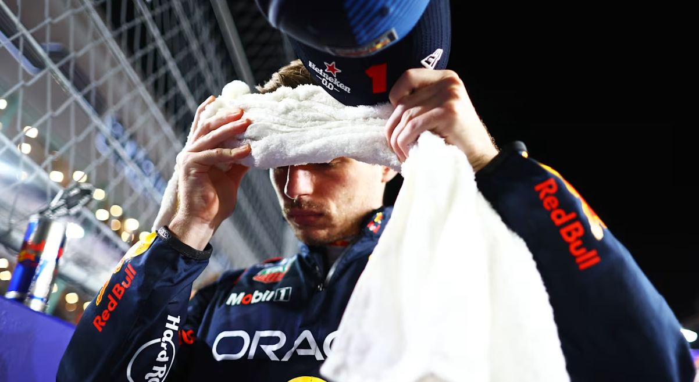

<html lang="en"></html>
<head>
    <meta charset="UTF-8">
    <meta name="viewport" content="width=device-width, initial-scale=1.0">
    <title>LATEST NEWS</title>
</head>
<body>
    
</body>
</html>
<html lang ="en"></html>
<head>
    <link rel="stylesheet" href="latestNews.css">
</head>
<body>

    <h3><br>LATEST NEWS<br></h3>


  <section class="News1">
    <a><br>LIGHTS TO FLAG: Scott Speed on his ‘outrageous’ F1 ego, what happened at Toro Rosso and a new chapter off track</a>
    
       <p><br>Scott Speed was one of the first Red Bull junior drivers to reach Formula 1 in the mid-noughties, only for the journey to last just a season and a half. In our latest Lights to Flag feature, Speed talks about battling a chronic disease in and out of the car, what really happened during his time at junior outfit Toro Rosso – which included run-ins with established racer David Coulthard and team boss Franz Tost – and how a significant post-F1 injury shaped the next phase of his life and career.</p>
        <A>Speed lives up to his surname</A>
        <p>Speed was born and raised in Manteca, California, but rather than the popular dirt oval route taken by the likes of NASCAR legend Jeff Gordon and current series star Kyle Larson – who both grew up a matter of miles away – he went go-karting with one eye already on F1. His F1-watching, Michael Schumacher-supporting, kart-racing father was central to those early years. 
        <br><br> While Mike Speed “started really late and didn’t have a lot of money”, he made his mark on the national scene and laid the foundations for the next generation in the family.
         <br><br>“When you’re a kid, you absorb the environment around you,” says Speed. “My dad took me to the go-kart track from the age of three and was the person I looked up to the most as my provider. I think it’s a very natural connection to say, ‘Okay, I want to do that’, and to make him happy. 
         <br><br> “My dad’s friend had a kid and, when I was 10 years old, they said, ‘Hey, Mike, would Scott want to drive our kart?’ I got in the kid’s kart – he was around a year older than me – and I went faster than him on my first ever go. The friend was like, ‘Dude, he needs to race’. So, they gifted us that kart and I used it for my first year of racing.</p>     
    
         <p>“I won a national title in my second year and, from that moment, I became a fully sponsored guy. I was able to race because of those results, so it really imprinted on me this identity that I was a naturally talented racecar driver. I was like, ‘This is what I’m supposed to do’. But it ended up being a really bad, fixed mindset with a cascade of issues later on.”</p>
        

  <section class="News2">
    <b><br>Verstappen hopes worst of Red Bull’s season now behind them after taking ‘good step’ with recent updates<br></b>
    <br><br>
    <p><br>Max Verstappen has opened up on the challenges presented by Red Bull’s RB20 package so far this season, with the reigning world champion hopeful that the worst of the team’s problems are now behind them. 
    <br><br>Verstappen started the 2024 campaign with seven wins from the opening 10 races, putting him well on course to claim a fourth world title and Red Bull in prime position to achieve another championship double.
 <br><br>However, a combination of Red Bull taking a wrong turn with car development and rival teams – particularly McLaren – making progress means the situation looks quite different heading into the final two flyaway sequences.
 <br><br>Verstappen’s advantage over Lando Norris in the drivers’ championship stands at a reduced 52 points, while Red Bull lost the constructors’ lead to McLaren at the recent Azerbaijan Grand Prix and now sit 41 points adrift.
 <br><br>Speaking to Autosport about Red Bull’s up and down year, Verstappen commented: “In the beginning I was surprised as well, but if you look at what our problems were, then I fully understand it.<br>
 <br><br><br>
    <br><br>“At some point, we have gone in the wrong direction. The other teams have either not faced that particular point yet or they developed the car in a slightly different way. That is always difficult to assess.”
    <br><br>He continued: “Early on I realised that the feeling was very different from last year’s car in terms of balance. At that time our car was still a lot quicker than the others, or maybe I should say that the others were not so good back then, so at that stage we could still compensate for our difficulties.</p>
    
  <section class="News3">
        <c><br>Life as a 'smooth operator', work experience dreams and his dad’s valuable advice – Getting to know the real Carlos Sainz<br></c>
        <br><br>
        <p><br>Our Getting to Know series homes in on another F1 driver this week as we put Carlos Sainz – with some help from trainer Pierluigi ‘Gigi’ Della Bona over a game of table football – to the quickfire question test. From how he fell in love with the sport to words of wisdom from his father, he shares it all in the video player above and transcript below…
        <br><br>Carlos, can you describe yourself in three words?
        <br><br>I would say thoughtful, rational and (after scoring a goal) good at football!
     <br><br>I hate talking about myself. I really don’t like when people ask me these questions, because I believe there’s already too many people in the paddock analysing me and saying how I am. I’ll leave that to other people! What I can tell you [from] what people say is what I said, rational, thoughtful, strategic, things like that. But honestly, I’m following what people say. I don’t like talking about myself!
     <br><br><br>
     <br><br>Carlos, what made you fall in love with F1?<br>
        <br>Umm… Watching Michael Schumacher, Fernando Alonso and Kimi Raikkonen battle back in the 2000s. That golden era, I think, was incredible for F1. Just seeing them, they were my idols when I was 10 years old, when they were fighting for championships.</p>
</article>     